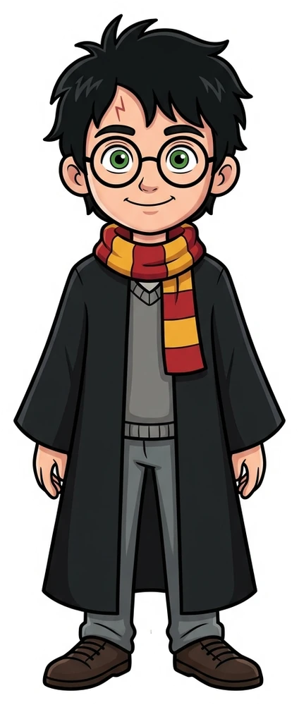
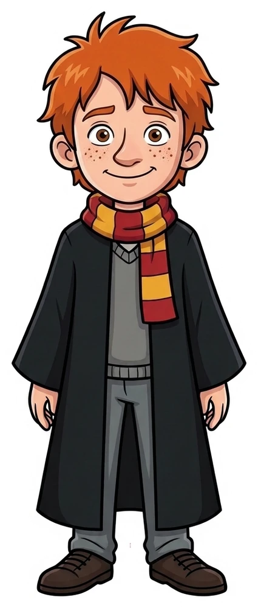
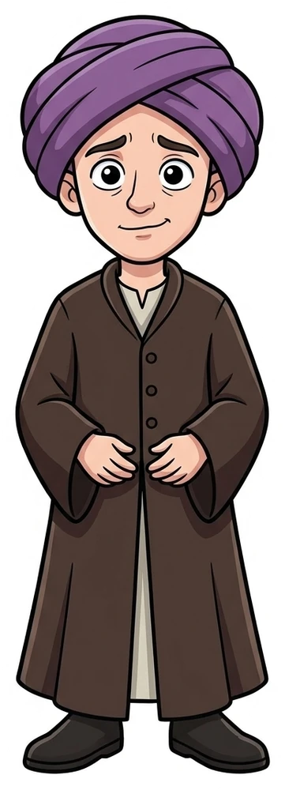
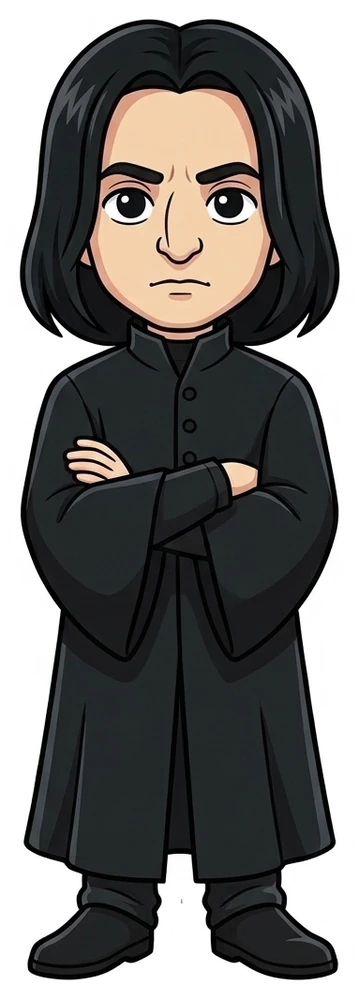

⚡ ShiftKey Academy · UP Build It! Machine Learning · Fall 2026
POV Graph
AI storytelling from each character's point of view
Presenter / Builder
Nhan Vu
Track & Focus
Machine Learning & Generative Graphs
Choose a point of view
Hover to see a perspective. Click to select it.

Harry PotterGRYFFINDOR · THE SEEKER● ACTIVE LENS
Hermione GrangerGRYFFINDOR · THE SCHOLAR● ACTIVE LENS

Ron WeasleyGRYFFINDOR · THE STRATEGIST● ACTIVE LENS

Prof. QuirrellDARK CONDUIT · THE HOST● ACTIVE LENS
🦁 GRYFFINDORPOV LEAD
HARRY POTTER
The Intuitive Seeker
PERSPECTIVE AND LIMITS
BELIEF AND BIAS · CHAPTERS 1–16
Sprint 1
PROMPT:What did you accomplish?
A POV graph that separates what happened from what each character knows.
CHARACTER POV · KNOWLEDGE GRAPH
1 / 4 · People and relationships
Sprint 2 · Too Much at Once
PROMPT:What was a challenge you faced, or a barrier/dependency?
We asked the AI to do too many jobs in one request.
⚠️ FIRST APPROACH
One prompt for everything
One chapter · 6,000 words
Find the people, their feelings, their relationships, and where they went. Return everything in one large answer.
When the answer was wrong, we could not tell which task had failed.
42%
It invented connections
The AI linked people who were in different rooms, as if they had spoken to each other.
📉
It missed people
Less prominent characters, such as Neville, Madam Hooch, and Fluffy, disappeared from the character list.
🚫
One error could stop the whole job
A cut-off answer or broken JSON could make the result unusable. We could not see which part had gone wrong.
Sprint 2 · One Job at a Time
PROMPT:How did you overcome it?
Give each step one job. Check its answer before continuing.
LANGGRAPHFrom chapter text to a checked graph
STEP 1
Find people
Add new characters; update people we already know
STEP 2
Check the answer
Pydantic checks the required fields and data types
STEP 3
Find connections
Link people using evidence from the chapter
STEP 4
Place the scenes
Record who was where, and in what order
STEP 5
Save the result
Store the checked data in Neo4j
LANGSMITH · EXAMPLE OF A RUN TRACEINPUT → ANSWER → CHECK
Read a chapter and find its characters.
Check that the answer has the fields we need.
Find relationships and scenes, then save the result.
If a step fails, inspect its prompt, answer, and error in LangSmith.
100%
Answers match the required format
< 0.5%
Unsupported facts in the output
Full
Every step can be inspected
Sprint 3 · Harry Does Not Know Yet
PROMPT:What's something surprising that happened during the process?
An AI that knows the ending can spoil an earlier scene.
BEFORE THE REVEAL · HARRY'S VIEW
Harry suspects Snape
Harry thinks Snape is trying to steal the Stone. He has clues, but he has interpreted them wrongly.
🩸 Harry sees Snape's injured leg after Halloween.
🧹 Hermione sees Snape muttering during the match.
🌲 Harry overhears Snape confronting Quirrell.
A retelling from Harry's view must preserve this suspicion.
CHAPTER 17 · WHAT HARRY LEARNS
It was Quirrell
Harry expects Snape in the final chamber. He finds Quirrell, and learns why the earlier clues were misleading.
🎭 Quirrell's harmless appearance was an act.
🛡️ Snape was protecting Harry during the match.
🐍 Voldemort was hiding in Quirrell's body.
Harry learns this later. His earlier self must not know it yet.
Sprint 3 · Keep Both Views
PROMPT:What's a diversion you took, or something surprising that happened?
Our design separates the story's facts from what Harry knows at each point.
TWO PASSESTwo readings, two different jobs
A design for tracking knowledge
1 · STORY FACTSWHO IS WHO
Read the whole book to connect names and identities, including those revealed near the end.
Quirrell is hiding Voldemort.

Snape was protecting Harry.
2 · HARRY'S VIEWWHEN THEY LEARN IT
Go through the chapters in order. Record what Harry believes, and when new information changes his mind.
Harry's knowledge at this point:
What's Next for Me
PROMPT:Where are you taking this project from here? What did this experience teach you?
Next: ingest the full series and build autonomous, multi-agent POV narrators.
"Model what characters know, not just where they were."
A POV subgraph keeps later revelations out of an earlier scene, so the retelling stays true to what the character knew.
MILESTONE 1 · COMPLETE
Epistemic Graph & Pipeline
Neo4j schema separating reality from perception; 5-stage modular LangGraph with LangSmith audit tracing.
✔ 100% Verified in Competition
MILESTONE 2 · IN PROGRESS
Full-Series Ingestion
Scaling from single chapters to full 7-volume series ingestion with cross-book identity resolution and continuous memory.
⚡ 70% Active Testing
MILESTONE 3 · PLANNED
Autonomous POV Reteller
Generative agent conditioned directly on character subgraphs to write original narrative prose in any authentic persona.